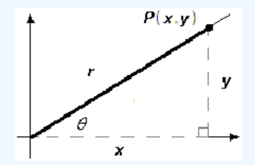

Coordinate Definitions of the Trigonometric Ratios
- \(\cos \theta = \dfrac{x}{r}\)
- \(\sin \theta = \dfrac{y}{r}\)
- \(\tan \theta = \dfrac{y}{x}\)

The town of Avery lies 48 miles due east of Baker, and Clio is 34 miles from Baker, in the direction \(35\degree\) west of north. How far is it from Avery to Clio?
We know how to solve right triangles using the trigonometric ratios. But the triangle formed by the three towns is not a right triangle, because it includes an obtuse angle of \(125\degree\) at \(B\text{,}\) as shown in the figure.
A triangle that is not a right triangle is called an oblique triangle. In this chapter we learn how to solve oblique triangles using the laws of sines and cosines. But first we must be able to find the sine, cosine, and tangent ratios for obtuse angles.
To extend our definition of the trigonometric ratios to obtuse angles, we use a Cartesian coordinate system. We put an angle \(\theta\) in standard position as follows:
The length of the side adjacent to \(\theta\) is the \(x\)-coordinate of point \(P\text{,}\) and the length of the side opposite is the \(y\)-coordinate of \(P\text{.}\) The length of the hypotenuse is the distance from the origin to \(P\text{,}\) which we call \(r\text{.}\) With this notation, our definitions of the trigonometric ratios are as follows.
It doesn't matter which point \(P\) on the terminal side we use to calculate the trig ratios. If we choose some other point, say \(P^{\prime}\text{,}\) with coordinates \((x^{\prime}, y^{\prime})\text{,}\) as shown at right, we will get the same values for the sine, cosine and tangent of \(\theta\text{.}\) The new triangle formed is similar to the first one, so the ratios of the sides of the new triangle are equal to the corresponding ratios in the first triangle.
Find the values of cos \(\theta\text{,}\) sin \(\theta\text{,}\) and tan \(\theta\) if the point \((12, 5)\) is on the terminal side of \(\theta\text{.}\)
In the previous example, note that we get the same results by using the triangle definitions of the trig ratios. We create a right triangle by dropping a vertical line from \(P\) to the \(x\)-axis, as shown in the figure. The legs of the right triangle have lengths 12 and 5, and the hypotenuse has length 13.
Our new definitions for the trig ratios work just as well for obtuse angles, even though \(\theta\) is not technically “inside” a triangle, because we use the coordinates of \(P\) instead of the sides of a triangle to compute the ratios.
Notice first of all that because \(x\)-coordinates are negative in the second quadrant, the cosine and tangent ratios are both negative for obtuse angles. For example, in the figure below the point \((-4, 3)\) lies on the terminal side of the angle \(\theta\text{.}\) We see that
\begin{equation*} r = \sqrt{(-4)^2 + 3^2} = 5 \end{equation*}so
\begin{align*} \cos \theta \amp = \dfrac{x}{r} = \dfrac{-4}{5} \\ \sin \theta \amp = \dfrac{y}{r} = \dfrac{3}{5} \\ \tan \theta \amp = \dfrac{y}{x} = \dfrac{3}{-4} = \dfrac{-3}{4} \\ \end{align*}
Find the values of cos \(\theta\) and tan \(\theta\) if \(\theta\) is an obtuse angle with \(\sin \theta = \dfrac{1}{3}\text{.}\)
In the examples above, we used a point on the terminal side to find exact values for the trigonometric ratios of obtuse angles. Scientific and graphing calculators are programmed with approximations for these trig ratios.
Find the sine and cosine of \(130\degree\text{.}\) Compare to the sine and cosine of \(50\degree\text{.}\)
Use your calculator to fill in the table. Round to four decimal places.
| \(\theta\) | \(~~~~\cos \theta~~~~\) | \(~~~~\sin \theta~~~~\) | \(180\degree - \theta\) | \(\cos (180\degree - \theta)\) | \(\sin (180\degree - \theta)\) |
| \(10 \degree\) | \(~\) | \(~\) | \(~\) | \(~\) | \(~\) |
| \(20 \degree\) | \(~\) | \(~\) | \(~\) | \(~\) | \(~\) |
| \(30 \degree\) | \(~\) | \(~\) | \(~\) | \(~\) | \(~\) |
| \(40 \degree\) | \(~\) | \(~\) | \(~\) | \(~\) | \(~\) |
| \(50 \degree\) | \(~\) | \(~\) | \(~\) | \(~\) | \(~\) |
| \(60 \degree\) | \(~\) | \(~\) | \(~\) | \(~\) | \(~\) |
| \(70 \degree\) | \(~\) | \(~\) | \(~\) | \(~\) | \(~\) |
| \(80 \degree\) | \(~\) | \(~\) | \(~\) | \(~\) | \(~\) |
The examples above illustrate the following equations. These three equations are called identities, which means that they are true for all values of the variable \(\theta\text{.}\)
Because of these relationships, there are always two (supplementary) angles between \(0 \degree\) and \(180 \degree\) that have the same sine. Your calculator will only tell you one of them, so you have to be able to find the other one on your own! Fortunately, this is not difficult.
Find two different angles \(\theta\text{,}\) rounded to the nearest \(0.1 \degree\text{,}\) that satisfy \(\sin \theta = 0.25\text{.}\)
Find two different angles \(\theta\) that satisfy \(\sin \theta = 0.5\text{.}\)
Because there are two angles with the same sine, it is easier to find an obtuse angle if we know its cosine instead of its sine.
Find the angle shown at right.
In the previous example, you might notice that \(\tan \theta = \dfrac{-4}{3}\) and try to find by calculating \(\tan^{-1}(\dfrac{-4}{3})\text{.}\) However, if we press
\begin{equation*} \text{2nd TAN}~~~ -4/3~ ) ~~~\text{ENTER } \end{equation*}the calculator returns an angle of \(\theta \approx -53.1 \degree\text{.}\) It is true that \(\tan (-53.1 \degree) = \dfrac{-4}{3}\text{,}\) but this is not the obtuse angle we want.
We also know that \(\sin \theta = \dfrac{4}{5}\text{,}\) and if we press
\begin{equation*} \text{2nd SIN}~~~ 4/5~ ) ~~~\text{ENTER } \end{equation*}we get \(\theta \approx 53.1 \degree\text{.}\) This is the acute angle whose terminal side passes through the point \((3,4)\text{,}\) as shown in the figure at right. The angle we want is its supplement, \(\theta \approx 180\degree - 53.1\degree = 126.9\degree\text{.}\)
In Chapter 2 we learned that the angles \(30\degree, 45\degree\) and \(60\degree\) are useful because we can find exact values for their trigonometric ratios. The same is true for the supplements of these angles in the second quadrant, shown at right.
Find exact values for the trigonometric ratios of \(135 \degree\text{.}\)
Find exact values for the trigonometric ratios of \(120\degree\) and \(150\degree\text{.}\)
We can also find the trig ratios for the quadrantal angles. These are the angles, including \(0\degree\text{,}\) \(0\degree\) and \(180\degree\text{,}\) whose terminal sides lie on one of the axes.
Find exact values for the trigonometric ratios of \(90\degree\text{.}\)
Find exact values for the trigonometric ratios of \(180\degree\text{.}\)
The figure below shows part of the map for a new housing development, Pacific Shores. You are interested in the corner lot, number 86, and you would like to know the area of the lot in square feet. The sales representative for Pacific Shores provides you with the dimensions of the lot, but you don't know a formula for the area of an irregularly shaped quadrilateral.
It occurs to you that you can divide the quadrilateral into two triangles, and find the area of each. Now, you know a formula for the area of a triangle in terms of its base and height, namely,
\begin{equation*} A = \dfrac{1}{2}bh\text{,} \end{equation*}but unfortunately, you don't know the height of either triangle.
However, you can easily measure the angles at the corners of the lot using the plot map and a protractor. You can check the values on the pot map for lot 86 shown above.
Using trigonometry, we can find the area of a triangle if we know two of its sides, say \(a\) and \(b\text{,}\) and the included angle, \(\theta\text{.}\) The figure below shows three possibilities, depending on whether the angle \(\theta\) is acute, obtuse, or \(90-\degree\text{.}\)
In each case, \(b\) is the base of the triangle, and its altitude is \(h\text{.}\) Our task is to find an expression for \(h\) in terms of the quantities we know: \(a\text{,}\) \(b\text{,}\) and \(\theta\text{.}\) You should check that in all three triangles
\begin{equation*} \sin \theta = \dfrac{h}{a} \end{equation*}Solving for \(h\) gives us \(h = a\sin \theta\text{.}\) Finally, we substitute this expression for \(h\) into our old formula for the area to get
\begin{equation*} A = \dfrac{1}{2}b~\blert{h} = \dfrac{1}{2}b~ \blert{a\sin \theta} \end{equation*}If a triangle has sides of length \(a\) and \(b\text{,}\) and the angle between those two sides is \(\theta\text{,}\) then the area of the triangle is given by
Find the are of lot 86.
The formula \(A= \dfrac{1}{2}ab\sin \theta\) does not mean that we always use the sides labeled \(a\) and \(b\) to find the area of a triangle. In this formula, the variables \(a\) and \(b\) represent the lengths of the sides that include the known angle. For example, the area of the triangle at right is given by \(A= \dfrac{1}{2}(5c)\sin \phi\text{.}\)
A triangle has sides of length 6 and 7, and the angle between those sides is \(150\degree\text{.}\) Find the area of the triangle.
Find the area of the triangle.
How many degrees are in each fraction of one complete revolution?
| \(\theta\) | \(~~~~\cos \theta~~~~\) | \(~~~~\sin \theta~~~~\) | \(180\degree - \theta\) | \(\cos (180\degree - \theta)\) | \(\sin (180\degree - \theta)\) |
| \(10 \degree\) | \(0.9848\) | \(0.1736\) | \(170\degree\) | \(-0.9848\) | \(0.1736\) |
| \(20 \degree\) | \(0.9397\) | \(0.3420\) | \(160\degree\) | \(-0.9397\) | \(0.3420\) |
| \(30 \degree\) | \(0.8660\) | \(0.5\) | \(150\degree\) | \(0.8660\) | \(-0.5\) |
| \(40 \degree\) | \(0.7660\) | \(0.6428\) | \(140\degree\) | \(-0.7660\) | \(0.6428\) |
| \(50 \degree\) | \(0.6428\) | \(0.7660\) | \(130\degree\) | \(-0.6428\) | \(0.7660\) |
| \(60 \degree\) | \(0.5\) | \(0.8660\) | \(120\degree\) | \(-0.5\) | \(0.8660\) |
| \(70 \degree\) | \(0.3420\) | \(0.9397\) | \(110\degree\) | \(-0.9397\) | \(0.3420\) |
| \(80 \degree\) | \(0.1736\) | \(0.9848\) | \(100\degree\) | \(-0.9848\) | \(0.1736\) |
| \(\theta\) | \(\cos\theta\) | \(\sin\theta\) | \(\tan\theta\) |
| \(120\degree\) | \(\dfrac{-1}{2} \) | \(\dfrac{\sqrt{3}}{2}\) | \(-\sqrt{3} \) |
| \(150\degree\) | \(\dfrac{-\sqrt{3}}{2} \) | \(\dfrac{1}{2} \) | \(\dfrac{-1}{\sqrt{3}} \) |
If a triangle has sides of length \(a\) and \(b\text{,}\) and the angle between those two sides is \(\theta\text{,}\) then the area of the triangle is given by
Delbert says that \(\sin \theta = \dfrac{4}{7}\) in the figure. Is he correct? Why or why not?
Give the lengths of the legs of each right triangle.
Explain why the length of the horizontal leg of the right triangle is \(-x\) .
Write an expression for the area of the triangle.